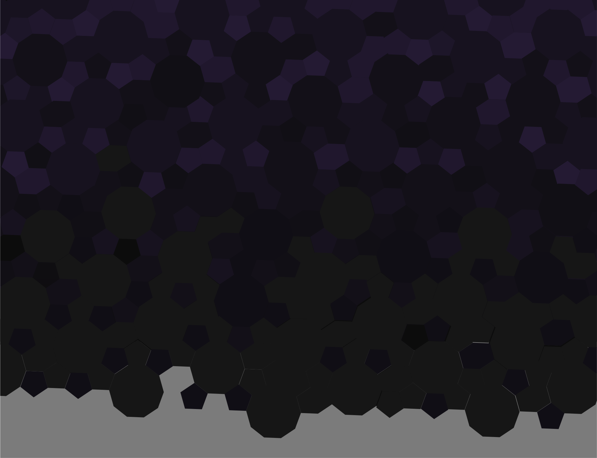
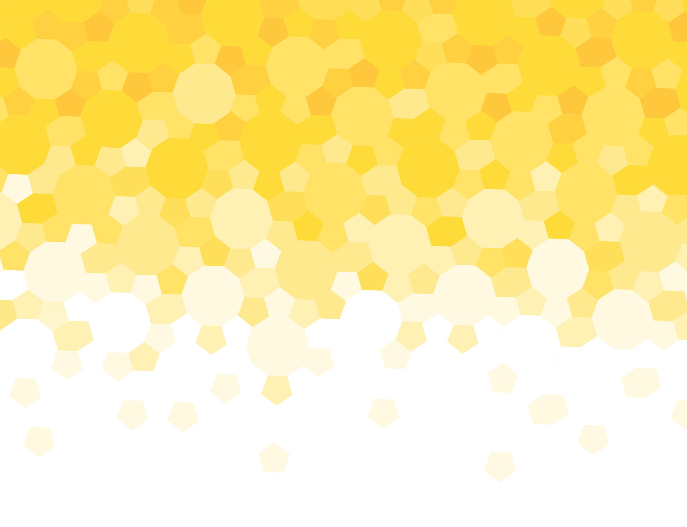

Individual Project
Prototyping, Ideation, UX Research
Adobe Illustrator, Figma
1 day
Fallen London is an text-based browser roleplaying game with an avid online following. However, players who like acting out their characters in homebrewed stories (or roleplaying) need to flock to third party websites like Discord to act out their in-game characters. Therefore, developing a hypothetical social media feature for Fallen London’s active roleplay community felt like a good challenge.
Before prototyping, popular social media sights were analysed to gain a deeper understanding of how their
design features worked. Among them were Discord, Linkedin, and Twitter.
Getting a nuanced understand of
social media was integral to figuring out what features were to be added onto Fallen London's UI.

Fallen London's own UI was sedulously studied. The greatest consideration was given to how the features would be incorporated into the UI without hampering the core narrative experience of the game.

Initial ideation saw several iterations of the website in quickfire succession. Some iterations looked like
exisiting social media websites like Reddit and Twitter asthey held aspects of the final design. The
iteration was structured so that users can have open accebility to various roleplay groups or games as well as
a chat function. The final iteration borrows heavily from Discord for roleplay, Facebook for direct
messages, and Twitter for profile structuring.
Next was a matter of a creating the wireframe on figma.
The first iteration was simple black and white to block in the features and where they could be accessed.
After, graphics were polished so they would look one-to-one with Fallen London's aesthetic. Some icons I had
to make from scratch in Adobe Illustrator, but aside from that I was pleased with the final product (Figure.1)
This piece was cobbled together in one day while learning the ins and outs of figma. The execution was straightforward so no major hurdles were experienced. The end result kept the vibe of the original Fallen London game without looking too much like any social media competitor.
Redesigning a brand focusing on breast cancer awareness. This website became a finalist at the Eunoia UX Hackathon.

A mobile app that connects Dungeon and Dragons (DnD) players in your area.

Redesigning website and improving self-checkout to reduce work load on staff.